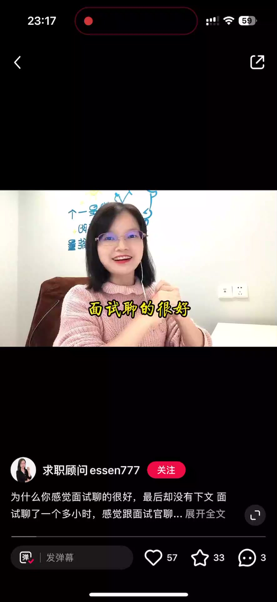
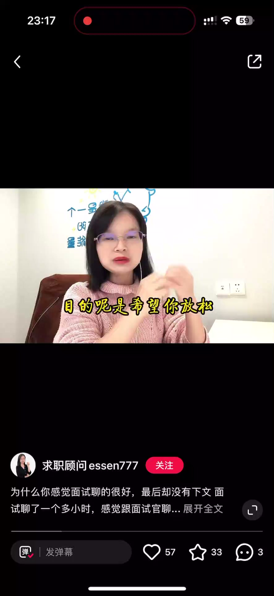
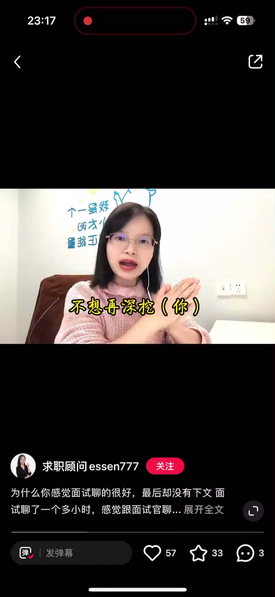
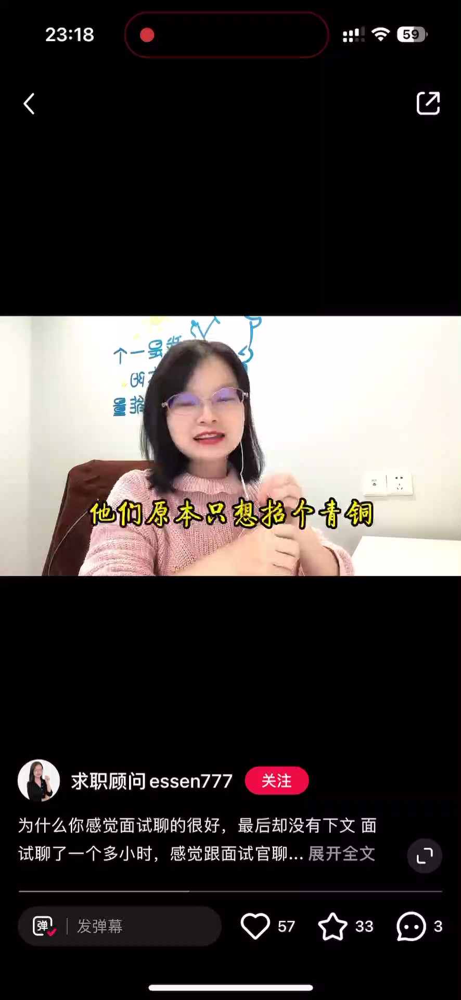

内容要点
一段 45 秒的面试解读课：和上一期「表现一般却通过」对应，为什么有些人面试感觉很好、面试官也有正面反馈，最后却被拒绝了？讲者给出四个可能原因：一是能力没被验证，面试是想象，到了实际工作中未必能用；二是竞争激烈，对方有更优秀的候选人；三是你的期望薪资超出了对方的预算；四是岗位需求发生了变化，比如岗位被取消或内部转岗消化。
知识结构
有些小伙伴反映：面试的时候自己感觉非常好，面试官反馈也很正面，最后却收到拒信。这种情况有四个可能的原因。
原因一：面试是想象，你的能力没有被真正验证，面试中表现得好，到实际工作中未必能用。原因二：竞争比较激烈，可能有比你更优秀的候选人，公司择优录取。
原因三：你的期望薪资超出了对方的预算，HR 谈薪谈不拢。原因四：岗位需求发生了变化，比如岗位被取消，或者岗位被内部转岗消化掉了。
面试感觉很好却被拒的四个原因：能力未被验证、竞争激烈有更优者、期望薪资超预算、岗位需求变化（取消或内部消化）。
00:00-00:08现象：感觉很好却被拒
有小伙伴反映：面试的时候自己感觉非常好，面试官反馈也非常正面，但最后却收到拒信。
从面试官视角看，这种情况可能基于四个原因。

00:09-00:45四个可能原因
原因一：面试是想象，你的能力没有被真正验证。你在面试中表现得好，但到了实际工作当中，未必能用到你的这些能力。
原因二：竞争比较激烈，可能有比你更优秀的候选人。如果出现这种情况，公司当然是择优录取。
原因三：你的期望薪资超出了对方的预算。这种情况 HR 谈薪谈不拢，最终只能拒绝。
原因四：岗位需求发生了变化。比如说岗位被取消，或者岗位被内部转岗消化掉了，公司都不再需要对外招这个岗位了。



完整转录（72段）
以下文本由 Whisper medium 模型自动转录，可能存在少量识别误差，已尽可能修正。
就想不明白为什么会有这么大的反转
今天我们就来好好聊聊这个话题
面试聊得很好
但结果没有通过
是什么原因导致的
又该怎么应对
接触原因主要有下个六种情况
第一你感觉聊得很愉快
其实是假象
这种情况最典型
面试官会营造一种比较好的沟通氛围
目的是希望你放松
能够展示自己最好的一面
过程中你感受到的好也好
肯定也好
其实只是你的个人感受
不代表面试官心里也这么想
很多时候其实面试官心里已经否定你了
不想再生蛙
但是又不好当场博你面子
所以问的问题会比较浅
没什么难度
你应付下来自然就很轻松了
第二种情况你确实很优秀
对方也很认可你
但是对于这家公司来讲
妙小佛大他装不下
他们原本只想招个青铜
结果来了个网站消化不良
第三种情况跟你聊得很嗨的这个面试官
他没有面试的决定权
可能你在某些面试官那里表现很好
但真正决定入不入用你的这个面试官
对你的评价反而一般
比四种情况有其他候选人比你更优秀
把你比下去了
这种也很常见
最后也可能遭到假面试
你应聘的这个岗位
关于他的定位以及薪酬福利这些
都还没有完全明确
早点来面试只是想先试试水
再有的就是公司并不是真的招人
约你过来聊聊
只是因为业务方向
想看看同行的思路找找灵感
第六种情况招聘需求发生变化
比如这个岗位他不招了
或者改变了招聘方向
你不符合新的要求
上面这六种情况
不管是出于内因还是出于外因
结果都不是我们求职者想要的
那怎么去改善呢
第三个方面
你可能多到去获取公司的相关信息
以及NP掌握的信息
避免自己才坑
在面试过程中呢
即使一些看上去很简单
很轻松的问题
也不要松懈
一定要记住言多必识
你在不经意接触的话
很可能就踩中了雷区
导致面试不通过
在面试之后
两天之内如果没有给回复的
可以主动去问HR面试结果
通过面试反馈多出自我总结
提升面试能力
我是Eason 这里是